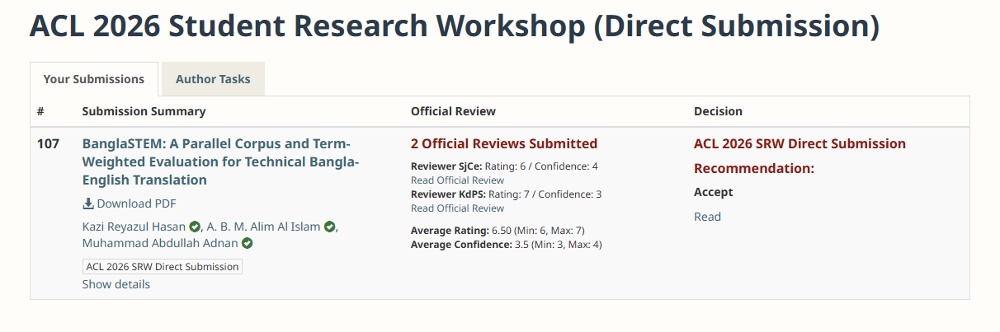
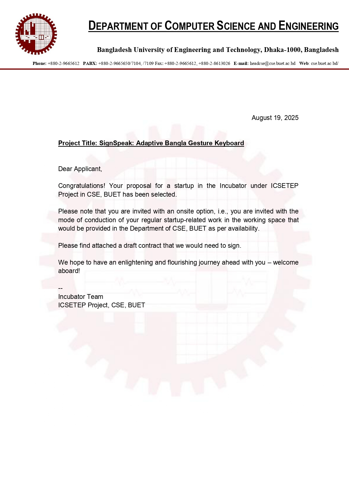
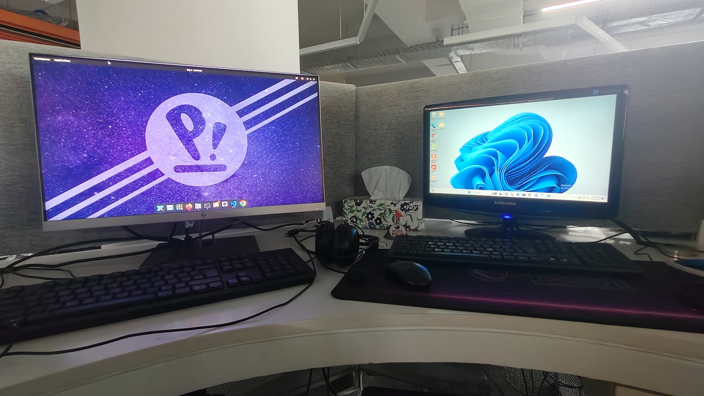
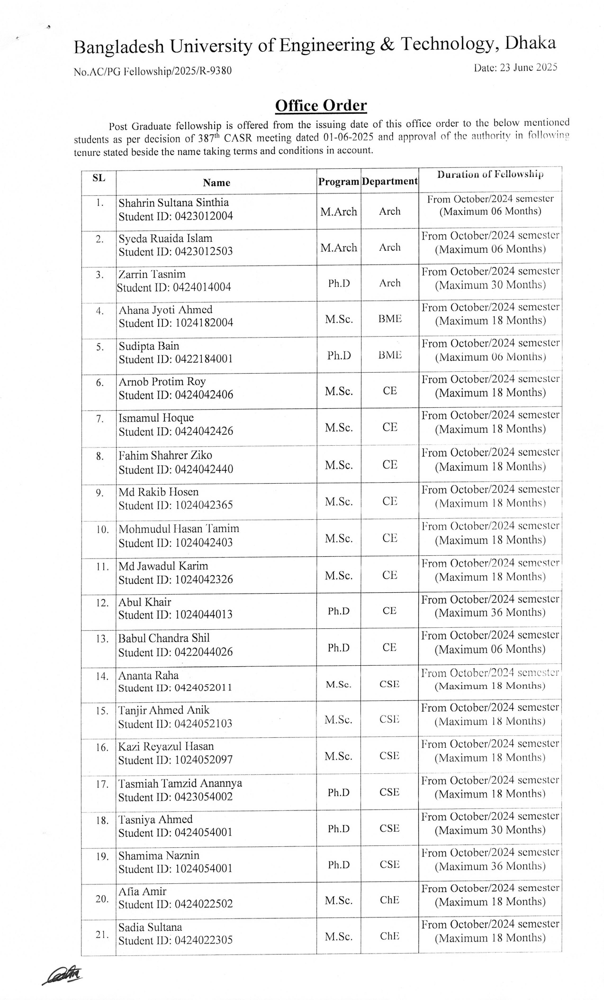
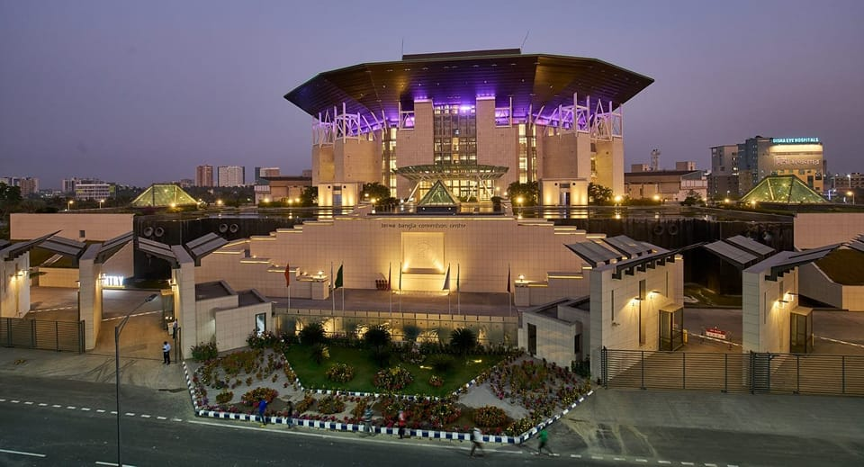
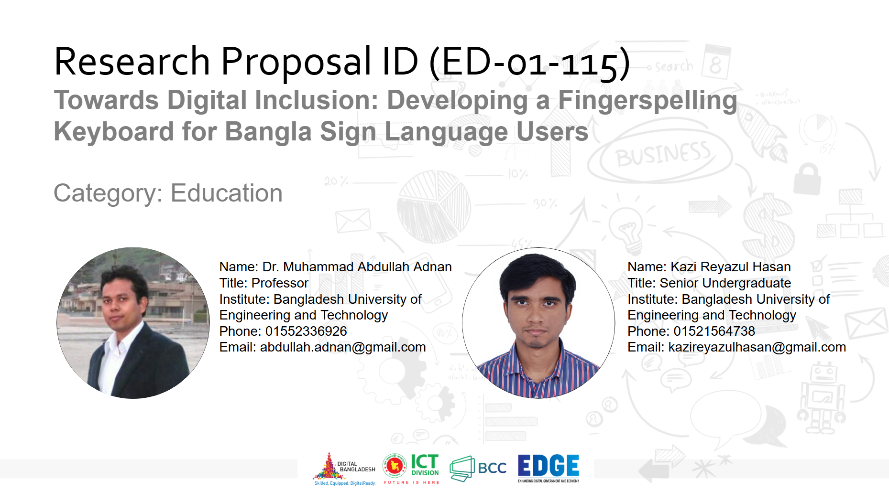
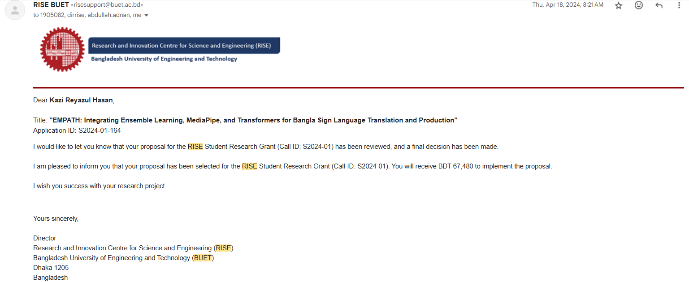
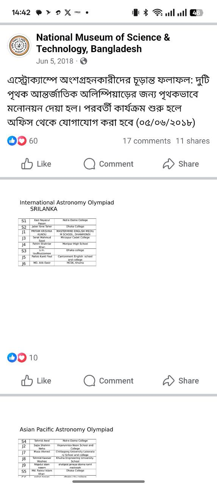

I work on mostly two things, human language and human behavior.
I studied computer science at BUET, and my research keeps returning to the same place, teaching machines to understand the way people actually communicate. That has carried me through sign language recognition, speech and emotion, machine translation, and hate speech detection, with a soft spot for my mother tongue Bengali and for the communities that most language tools quietly leave behind.
Around the language work I also build pattern recognition and multimodal systems, including the biometric recognition I do at TigerIT. These days I also teach a bit of computer science as a part-time adjunct lecturer at Presidency University and lead SignSpeak, a small startup building communication tools for deaf communities. I am applying to PhD programs for Fall 2027, and I would be glad to talk if any of this feels close to your lab.
research
The threads that run through almost everything I work on.
language processingspeech and behaviorpattern recognitionmultimodal ai
news
A few recent things.
interspeech 2026
2026
Speech emotion paper accepted at Interspeech 2026
Our dual stream model for Bangla speech emotion recognition was accepted to the Interspeech 2026 main track.
teaching
january 2026
Started teaching at Presidency University
I joined as an adjunct lecturer, teaching computer science once a week to more than two hundred students across programming, digital logic, and networks.

2026
BanglaSTEM accepted at ACL SRW 2026
The first technical translation corpus for Bangla and English found a home at the ACL Student Research Workshop.
aacl 2025
2025
Hate speech work at IJCNLP AACL 2025
Our Bangla hate speech system placed in the top five across all three subtasks at the BLP workshop.

august 2025
SignSpeak joins the BUET Incubator
Our startup was selected for the incubator, and I am leading it as CEO, building tools that make everyday communication easier for deaf communities.

july 2025
Started at TigerIT Bangladesh
I joined the R and D team full time, working on biometric recognition systems that get deployed at real scale.

june 2025
MSc research fellowship at BUET
I received a fellowship in my very first MSc semester, awarded on research contributions alone with no grade requirement.

december 2024
Oral presentation at ICPR 2024
I presented EMPATH and came away with wonderful feedback from the vision community.

september 2024
ICT Innovation Fund grant
A research grant from the ICT Innovation Fund of the Government of Bangladesh for inclusive educational AI.

april 2024
RISE BUET research grant
Internal funding from the BUET Research and Innovation Centre for our sign language work.

august 2018
Represented Bangladesh at the Astronomy Olympiad
I topped the national camp and joined the International Astronomy Olympiad. Still one of my favorite memories.
publications
Peer reviewed work.
01
Dual-Stream DNN-KAN Networks with Bangla-Specific Features for Speech Emotion Recognition
Kazi Reyazul Hasan and collaborators
accepted, interspeech 2026 main track
02
BanglaSTEM: A Parallel Corpus for Technical Domain Bangla-English Translation
two more papers are under review at ijcb and emnlp.
experience
jan 2026 to present
Adjunct Lecturer
Presidency University
Teaching more than two hundred weekend batch students across courses like introduction to programming, object oriented programming, digital logic design, and computer networks and security.
jul 2025 to present
Software Engineer, R and D
TigerIT Bangladesh Limited
Improved our core face recognition benchmark by three percent in the NIST FRTE evaluations with a new margin based loss that works well with AdaFace.
Building an iris recognition system with vision transformers and circular CNNs to move past the older Hamming distance methods, aiming for under one percent equal error rate. Ours currently ranks fourteenth in the world on IREX 10.
mar 2025 to may 2025
Junior AI Engineer
Robofication LLC, remote
Designed a multimodal system modeling interface on JointJS, FastAPI, and React for generating SysML diagrams.
Wrote strategies that used large language models to exchange artifacts between our AI toolchain and Cameo Systems Modeler.
dec 2023 to mar 2025
Undergraduate Research Assistant
Bangladesh University of Engineering and Technology
Worked with Dr. Muhammad Abdullah Adnan on language and behavior technology, mostly for Bengali.
Led work across sign language recognition, speech and emotion, machine translation, and hate speech detection.
Wrote and submitted more than five papers, with two more under review at IJCB and EMNLP.
Helped secure research funding from RISE BUET and the ICT Innovation Division.
education
feb 2020 to mar 2025
BSc in Computer Science and Engineering
Bangladesh University of Engineering and Technology
CGPA 3.72 out of 4.00, and 3.88 over the last four semesters. Thesis on MediaPipe aided ensemble learning with attention based transformers for word level sign language recognition.
A sign language recognition framework that beats earlier accuracy benchmarks by five to eight percent, with an interpolation step that recovers keypoints lost during fast motion.
SignSpeak selected for the BUET Incubator Program, where I serve as CEO.
sep 2024
Research Grant, ICT Innovation Fund, Government of Bangladesh.
apr 2024
Internal Research Grant, RISE BUET.
mar 2023
Best Project Award, CSE 316, BUET.
may 2018
National Winner, Bangladesh Astronomy Olympiad.
contact
Let us talk.
I am on the lookout for PhD positions and research collaborations for Fall 2027. The surest way to reach me is email, and I read everything that comes in.